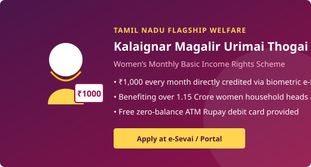
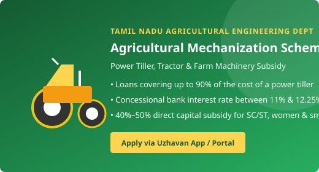

Public Welfare & Citizen Schemes by Life Stage
Government welfare policies are structured to support individuals at each pivotal turning point in their lives. The core objective of Benefit Bridge is to ensure that no citizen remains unaware of the social security nets created for their demographic cohort. From early childhood healthcare and adolescent development to adult entrepreneurship seed funds and dignified retirement pensions, verified government support is ready to be claimed.
Applying for modern welfare schemes is streamlined through Direct Benefit Transfer (DBT) and digital identity authentication. By understanding the specific income thresholds, age brackets, and required identification documents for each program, citizens can bypass middlemen and receive direct financial assistance, subsidized insurance coverage, and professional toolkit subsidies deposited directly into their bank accounts.
Comprehensive Public Welfare Breakdown by Age
Youth & Skill Development
Ages 18 – 35Employment, Training & Self-Employment
- TN Naan Mudhalvan: Free statewide upskilling in AI, IT, Cloud & core engineering.
- PMKVY 4.0 & TNSDC: Free certified industrial training with job placement aid.
- National Apprenticeship (NAPS): Rs. 8,000 – 12,000 monthly DBT stipend.
- TN Annal Ambedkar Business Champions: 35% capital subsidy for SC/ST entrepreneurs.
Women & Family Welfare
Ages 18 – 50Maternity, Basic Income & Women Rights
- Kalaignar Magalir Urimai Thogai: Rs. 1,000/month basic income for women heads.
- Dr. Muthulakshmi Reddy Maternity: Rs. 18,000 cash aid + Amma nutrition kit.
- Vidiyal Payanam: 100% zero-fare free bus travel for women across Tamil Nadu.
- TN Vazhndhu Kattuvom Project: Micro-enterprise enterprise development loans.
Universal Healthcare
All Ages / FamilyCashless Hospitalization & Doorstep Care
- TN CMCHIS & Ayushman: Rs. 5 Lakhs annual cashless treatment per family.
- Makkalai Thedi Maruthuvam: Free chronic illness medicines delivered at home.
- Innuyir Kappom (Nammai Kakkum 48): Free emergency trauma care for first 48 hours.
- Jan Aushadhi Kendras: Quality generic medicines at 50% – 90% discount.
Senior Citizen Dignity
Ages 60+ YearsPension, Assistive Devices & Nutrition
- TN Destitute Old Age Pension: Rs. 1,000 monthly direct bank pension.
- Annapurna Free Rice: Free 20 kg monthly rice supplied via Smart PDS cards.
- Rashtriya Vayoshri: Free wheelchairs, walking sticks, spectacles & dentures.
- Senior Citizen Savings Scheme: High 8.2% guaranteed quarterly interest rate.

Agricultural & Rural Livelihood Schemes
For farming households in Tamil Nadu, the Agricultural Mechanization Scheme offers up to 90% loan assistance with 40% – 50% capital subsidies for purchasing modern power tillers, tractors, and rotary tillers. In addition, the Kalaignarin All Village Integrated Agriculture Development Programme (KAVIADP) provides free farm electricity, solar pumps, and direct PM-KISAN quarterly installments of Rs. 6,000 annually.

Frequently Asked Questions
What is the objective of this scheme? ˇ
The scheme offers loans to farmers covering up to 90% of the cost of a power tiller, with an interest rate between 11% and 12.25%.
Who is eligible for this scheme? ˇ
Individual farmers, joint liability groups, small and marginal farmers, and women agricultural entrepreneurs possessing cultivable landholding in Tamil Nadu and across verified state registries are eligible.
What is the purpose of this loan? ˇ
The purpose of this loan and capital subsidy is to encourage agricultural mechanization, reduce farm labor dependency, and enhance timely tilling and sowing operations across agricultural lands.
What percentage of the power tiller’s cost is covered by the loan? ˇ
Up to 90% of the total on-road price of the power tiller equipment is covered under bank loan assistance, with the remaining 10% paid as farmer margin contribution.
What documents are needed to apply online for welfare & agricultural schemes? ˇ
Applicants must keep the following documents scanned and ready before filing an online scheme application:
- Aadhaar Card: Primary identification linked to active mobile number for OTP e-KYC.
- Smart Family Card (Ration Card): Proof of household composition and residence in Tamil Nadu.
- Patta / Chitta & Adangal Extracts: Certified land ownership records for farm machinery and crop compensation schemes.
- Income & Community Certificate: e-Sevai revenue issued certificates for subsidy quota qualification.
- Bank Passbook: First page with Account number and IFSC code (mandatorily seeded with Aadhaar for DBT transfer).
How to apply online step-by-step on Tamil Nadu / myScheme portal? ˇ
Follow these 5 verified steps to submit your welfare scheme application online:
- Step 1 - Citizen Login: Visit the myScheme Portal or the Tamil Nadu e-Sevai Citizen Portal.
- Step 2 - Aadhaar e-KYC: Enter your Aadhaar number and submit the 6-digit OTP received on your mobile.
- Step 3 - Select Scheme Category: Navigate to your demographic category (Women, Farmer, Senior Citizen, or Youth) and select the specific scheme.
- Step 4 - Upload Scanned Documents: Attach PDF or JPEG scans of your Smart Card, Patta/Chitta, or Income Certificate (< 200 KB).
- Step 5 - Generate Acknowledgment: Submit the application, note your Application Reference Number (ARN), and track the approval status via SMS alerts.
Ready to file your scheme application?
Download our complete 2026 application guide handbook or visit the official single-window government portals below: